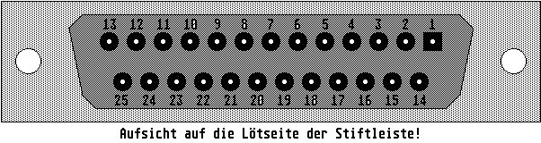
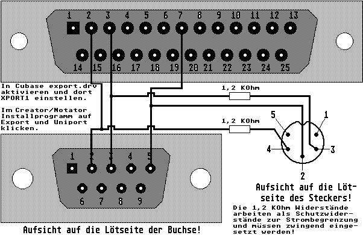

Previous
Next
TOC
Die Pinbelegung der Modem 1 Schnittstelle
1 Ground
21 Not Connected
2 Transmit Data
22 Ring Indicator
3 Receive Data
23-25 Not Connected
4 Request To Send
5 Clear To Send
Folgende
Geschwindigkeiten sind auf
6 Not Connected
dieser Schnittstelle möglich:
7 Signalmasse
8 Data Carrier Detect
300,600,1200,1800,2000,2400,3600,4800,
9-19 Not Connected
9600 und 19200 Bit pro Sekunde.
20 Data Terminal Ready

Eine zusätzliche Midischnittstelle über die Serielle Schnittstelle
geht ganz einfach, zumal sich der Bauteileaufwand mit 10 Mark sehr
in grenzen hält.
Die 1,2 KOhm Widerstände arbeiten als Schutzwiderstände zur Strom-
begrenzung. Die RS232 Schnittstelle arbeitet mit +12V und -12V und
die Midischnittstelle nur mit +5V, werden die 1,2 KOhm Widerstände
weggelassen rauchen die angeschlossenen Midigeräte sehr schnell ab
(im wahrsten Sinn des Wortes!).

Die Belegung für das Verbindungskabel zur Hagenuk Speed Dragon
Kapitel Die Pinbelegung der Modem 1 Schnittstelle, Seite 1